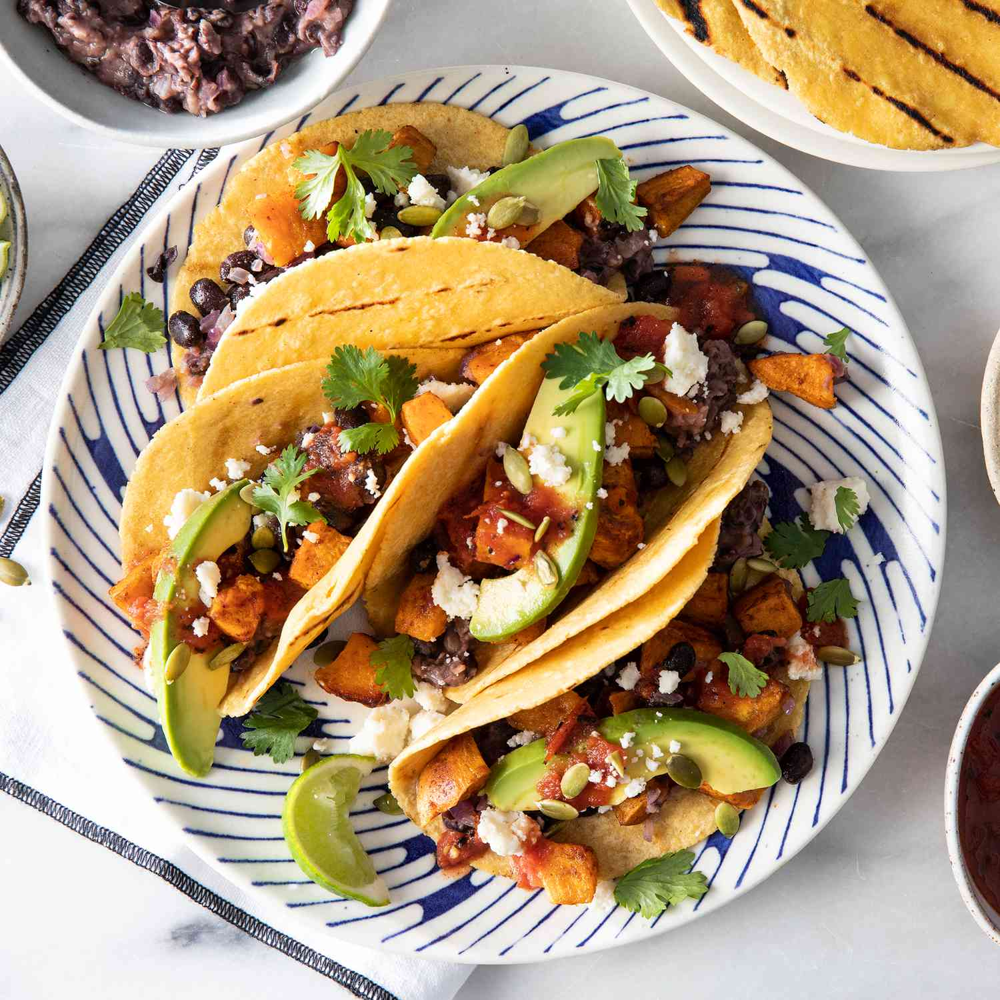

Sweet Potato and Black Bean Tacos

Description
A hearty and flavorful taco recipe featuring roasted sweet potatoes and protein-packed black beans. Topped with fresh avocado and salsa for a burst of flavor!
Ingredients
- 2 medium sweet potatoes, diced
- 1 can black beans, drained and rinsed
- 1 tsp chili powder
- 1 tsp cumin
- 1/2 tsp paprika
- 1 tbsp olive oil
- 6 small tortillas
- Toppings: avocado, salsa, cilantro, lime wedges
Steps
- Preheat oven to 400°F (200°C).
- Toss sweet potatoes with olive oil, chili powder, cumin, and paprika. Spread on a baking sheet and roast for 20-25 minutes until tender.
- Warm the tortillas in a pan or microwave.
- Assemble tacos by filling tortillas with roasted sweet potatoes and black beans.
- Top with avocado, salsa, cilantro, and a squeeze of lime.
Index